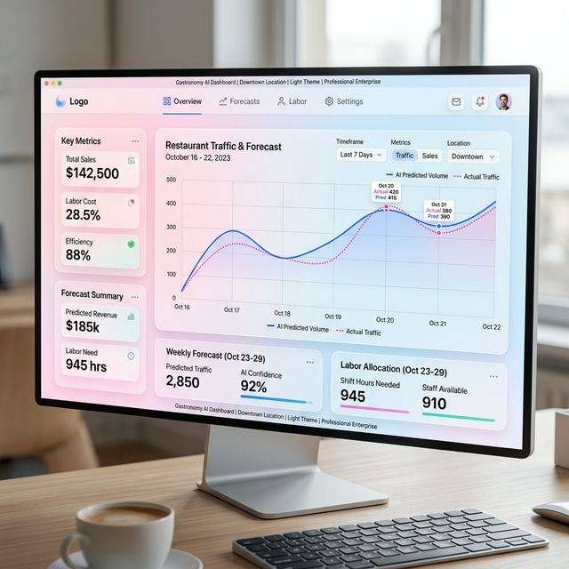
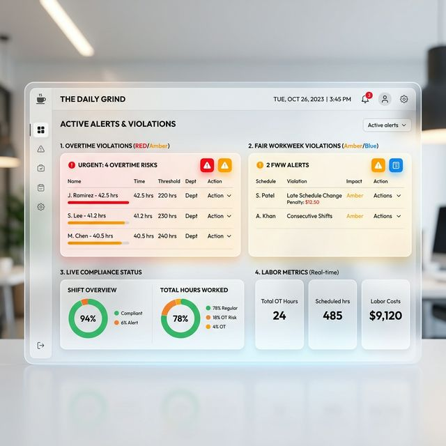
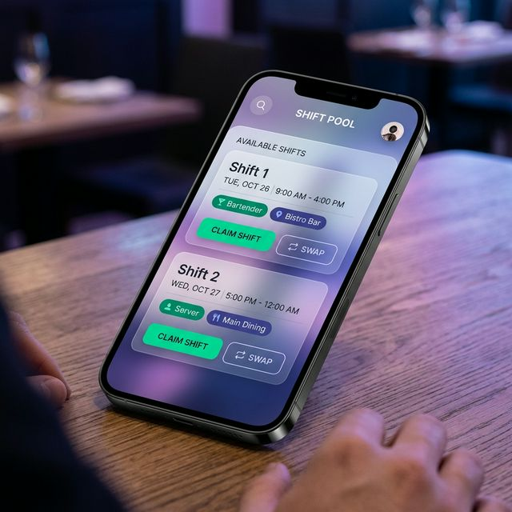
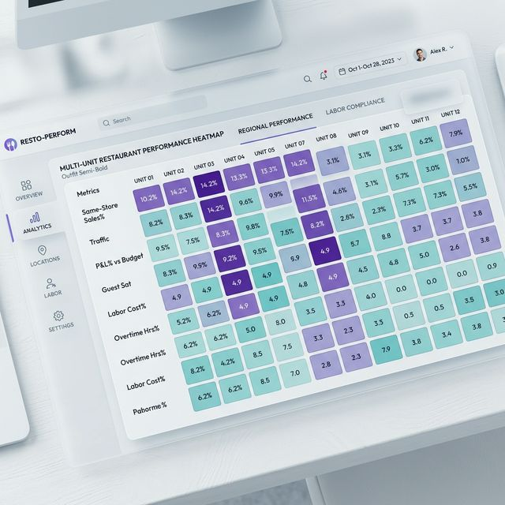
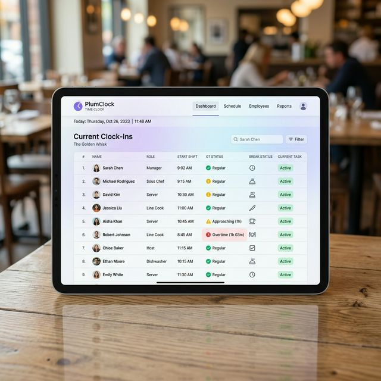

Trusted by 100,000+ restaurant professionals across the globe


Make smarter schedules faster. Altametrics combines sales forecasts, weather data, and historical trends with AI to build schedules that match labor spend with actual demand.
Trusted by 100,000+ restaurant professionals across the globe
Streamline everything from time clocking to tip automation. Simplify shift swaps and stay ahead of complex labor laws effortlessly.
Use historical sales, local events, and labor data to build accurate schedules. Prevent overstaffing and avoid understaffing so every guest gets top-tier service.

Get real-time alerts as you build the schedule to avoid costly violations. Altametrics serves as a strict guardrail against local, state, and federal labor laws.

The Altametrics Mobile App empowers your team to manage their own shift swaps, drops, and pickups while keeping managers in complete control.

Automate fair and compliant tip distribution. Never do tip math again with seamless syncing between your POS, time clock, and payroll systems.

Stop waiting for end-of-week reports. See your labor cost percentage as it happens, allowing for immediate floor adjustments to protect your margins.

Manage thousands of locations from a single source of truth. Standardize labor policies, compare store performance, and centralize reporting effortlessly.

Eliminate buddy-punching and time theft with our integrated PlumClock. Ensure every second of labor is accounted for with biometric and geo-fenced verification.

Transform how you operate. See exactly why the largest quick-serve restaurant chains trust Altametrics AI for workforce management.
Hear from the operators who rely on Altametrics to optimize labor spend.
"Altametrics has fundamentally changed how we handle workforce management. We've seen a 15% reduction in labor costs in just six months while improving employee satisfaction."

"The predictive scheduling completely eliminated our overtime bloat. Managers get alerts before compliance violations happen, saving us tens of thousands in penalties."

"Our team loves the mobile app shift swapping. We no longer have managers spending hours tracking down coverage. The staff handles it seamlessly themselves."

Common questions about our Agentic AI workforce scheduling platform.
Our Agentic AI continuously analyzes your historical sales, foot traffic, local events, and real-time weather forecasts. It uses this data to predict exactly how many staff members are needed for every 15-minute interval, ensuring you are never overstaffed during slow periods or understaffed during a rush.
No, the Altametrics Mobile App with integrated shift-swapping, time-off requests, and direct messaging is included out-of-the-box with our Workforce Management suite for all employees.
Altametrics acts as your compliance guardrail. The system maintains a continuously updated database of local, state, and federal labor laws. When a manager attempts to schedule an employee in a way that would trigger a violation (e.g., Fair Workweek, minor restrictions, or overtime), the system automatically flags it.
Absolutely. We have seamless integrations with all major payroll platforms (including ADP, Paychex, and Paycom) to automate tip distribution and ensure time-and-attendance data syncs accurately with zero manual data entry.
Stop bleeding margins. Start building schedules your team will love.
Request a Personalized Demo